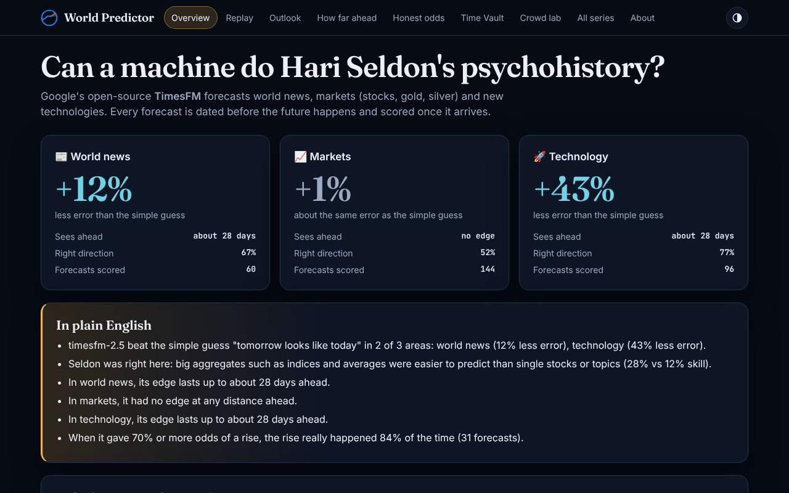

Psychohistory, tested in public
Can a machine see the future of crowds?
Hari Seldon bet that no one can predict a person, but anyone could predict a billion of them. World Predictor puts that bet to Google's open TimesFM model across world news, markets and new technology, then seals every forecast with a date and scores it when the future arrives.
Forecasts refresh every week on GitHub Actions
How a forecast is built
One forecast, taken apart.
Scroll, and the forecast card comes apart into the six layers it is made of, then clicks back together. Every forecast on this site is built exactly this way.
One finished forecast. Keep scrolling.
- SourcesGDELT news attention, Yahoo Finance prices, Wikipedia pageviews and Our World in Data.
- HistoryYears of daily or weekly values for one series: the past the model is allowed to see.
- Context windowTimesFM reads the history in patches of 32 steps, like words in a sentence.
- TimesFM 2.5Google Research's open forecasting model. Nothing is trained on our data.
- ForecastA range for every step ahead: the middle guess and an 80% band, sealed with a date.
- ScoreWhen the future arrives, reality is drawn over the fan and the forecast is scored.
Did it beat a simple guess?
Crowds were predictable. Markets were not.
Skill is how much less error TimesFM made than "tomorrow looks like today", in backtests that never let it see the future it was tested on. Right of the line is better than the guess.
Full tables, horizons and calibration are in the app and the report.
The app
Every forecast, replayed and scored.
Replay past forecasts against what really happened, read this week's outlook in plain words, and watch the Time Vault open sealed predictions as their dates arrive.

Replay
Press play and watch past forecasts meet reality, frame by frame.
Outlook
Stocks, gold, silver, Bitcoin, news and AI: the newest forecast and its odds, in words.
Time Vault
Predictions sealed before the future happens, opened and scored when it does.
How far ahead
The "Seldon horizon": how many days the model's edge lasts in each area.
Honest odds
When it says 70%, does it happen 70% of the time? The calibration test.
Crowd lab
Drag a slider and see why ten thousand noisy people add up to something predictable.
Web or download
The same app, two ways.
Use it here with nothing to install, or download the full version and run TimesFM on your own computer. Both are built from the same files, so they look and work the same.
On the web
GitHub Pages serves this site with the newest weekly forecasts. It works offline after the first visit.
On your computer
psychohistory app fetches fresh data, runs TimesFM and opens this same app at localhost.
Quick start
Three commands on Ubuntu, macOS or Windows. Demo data opens in seconds.